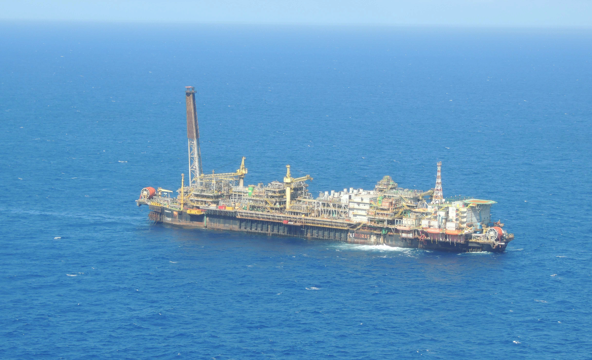

IT Projects
ERP Systems, CRM Systems, HR Systems, Store Systems

ERP Implementation - Finance, Invoicing, Accoutability, HR, Commercial,cashflow, PCP, Stock, Services

ERP Development and Implementation
BPM CRM Implementation
Performance Evaluations Systems Implementation
Systems Project Management
Oil & Gas Projects
P-54 Subsea interconections

P-51 Subsea interconections
P-56 Subsea interconections
Large budget projects management from USD 30 million to USD 700 million
PMO Projects
PMO implementation, raising the level of maturity in projects from 0 to 3 in two years.
LEAN system implementation associated with best practices in project management.
SharePoint Implementation for Projects Documentation.
Project Online Implementation
First SOMAS ( Seminary of Improvement Opportunities for Support Teams) Ágile Committee member and presenter.
Linkedin articles:
- Agile Engineering? Agile Companies?
- Standerize? In what level?